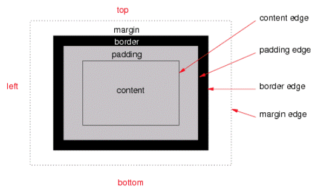
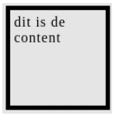

Wat zijn de eigenschappen van block boxes en inline boxes?
In CSS we broadly have two types of boxes — block boxes and inline boxes. These characteristics refer to how the box behaves in terms of page flow, and in relation to other boxes on the page:
If a box is defined as a block, it will behave in the following ways:
Unless we decide to change the display type to inline, elements such as headings (e.g. <h1>) and <p> all use block as their outer display type by default.
If a box has an outer display type of inline, then:
The <a> element, used for links, <span>, <em> and <strong> are all examples of elements that will display inline by default.
The type of box applied to an element is defined by display property values such as block and inline, and relates to the outer value of display.
Source: CSS type selectors (MDN Web Docs)
Wat zijn de eigenschappen van block boxes en inline boxes?
Dit is een block box en neemt de hele breedte in waardoor de
volgende box op de volgende regel zit. In dit blok zit inline tekst in wat dus niet op de volgende regel komt te staan.
Wat gebeurt er als je een width en een height toevoegt aan de span tag ( <span > ) van vorige opdracht?
Depends. Spans are inline elements by default and as such will ignore width and height values. However when set to block (like the outer span), they become block elements and which do accept witdh and height values.
Hieronder zie je een box-model. Leg uit wat de volgende termen betekenen: content, padding, margin en border.
In CSS, the term "box model" is used when talking about design and layout. The CSS box model is essentially a box that wraps around every HTML element. It consists of: margins, borders, padding, and the actual content.
Source: CSS box model (w3schools)
Als je ruimte wilt maken tussen de border en content, welke css property gebruik je dan? Maak een voorbeeld in je antwoord.
To achieve that you would use padding. For example:
h2 { padding: 6x; }
This would apply 6 pixels of padding to all <h2> block elements.
Source: CSS padding (w3schools)
Als je ruimte wilt maken tussen de border en buiten de box, welke css property gebruik je dan? Maak een voorbeeld in je antwoord.
Margins are used to create space around elements, outside of any defined borders.
div { margin: 20x 20px 20px 20px; }
This applies 20 pixels of margin to the top, right, bottom and left of all <div> elements.
Source: CSS margin (w3schools)
Maak nu een blok met width: 100px, height: 100px, margin: 5px, padding 5px en border-width: 5px. Zie hieronder:
The box below has a total width of 120 pixels and a height of 120 pixels. It's noteworthy that margin doesn't affect the actual size of the element.
this is the
content
Welke CSS property kun je gebruiken om ervoor te zorgen dat de waarde van width en height de totale breedte en hoogte is van het blok van de voorgaande opdracht?
To stretch a div block element to the size of a parent element one could use max-width property in combination with an absolute length (px, pt etc) or relative length (%, em, rem) unit. /or the % unit set too 100. The % unit is a relative unit. The absolute length units are fixed and a length expressed in any of these will appear as exactly that size. Relative length units scale better between different rendering mediums (i.e. bigger and smaller screens).
Maak een aantal voorbeelden van boxen en maak gebruik van steeds verschillende margin, padding en border properties.
this is the
content
this is the
content
this is the
content
this is the
content
this is the
content
Source: CSS padding (w3schools), CSS margins (w3schools),
CSS borders (w3schools)